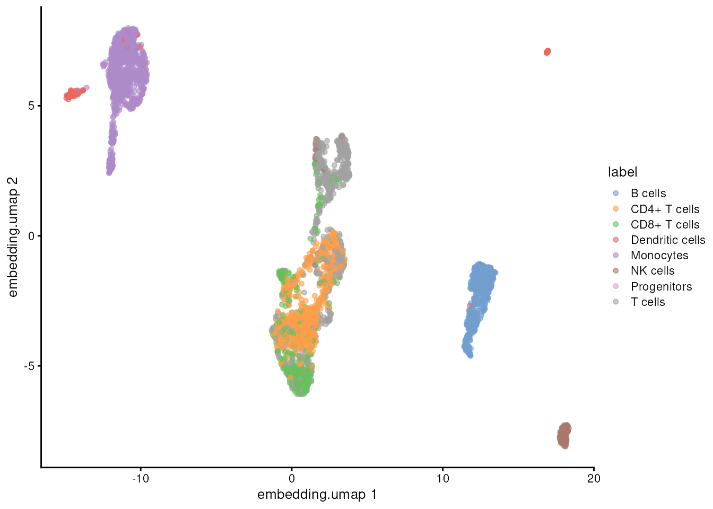
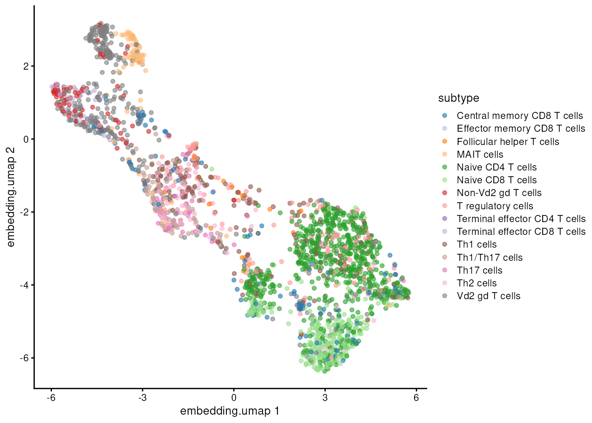

A single-cell workflow with every subset in one object
Source:vignettes/articles/pbmc-workflow.Rmd
pbmc-workflow.RmdA single-cell analysis makes many versions of the same data: all droplets, the droplets that hold cells, the cells that pass quality control, the genes that vary most, a cell type re-analysed on its own. Usually each becomes a separate object, and each copy has to be kept in step with the others.
This article runs a complete analysis of 4,000 peripheral blood
mononuclear cells (PBMCs) from 10x Genomics and keeps every one of those
versions as a subset of one
ExperimentSubset object. A subset stores which rows and
columns of its parent it uses, plus anything computed for it. It sees
its parent’s assays without copying them.
The purpose of this article is to show how a whole analysis fits in one object, not to give a complete or definitive annotation of PBMCs. The quality-control thresholds and the cell-type labels are simple, common choices; a careful annotation would need more work, such as checking marker genes for each cluster.
The analysis takes about 15 minutes and downloads about 200 MB the first time it runs.
We store results in two ways, and each step says which it uses:
-
Experiment style.
getSubsetExperiment()takes a subset out as an ordinarySingleCellExperiment; we run any tool on it, andsetSubsetExperiment()stores the result back in the subset: its assays, colData, rowData, reducedDims and metadata replace the subset’s own. -
Direct style. We compute a result ourselves and
store it in the subset with
setSubsetAssay(),colData(),rowData()orreducedDim()withsubsetName =.
The names of the subsets, assays and reduced dimensions follow the MAMS conventions; the last section shows how they map.
The data
We use the PBMC 4k data set, processed with Cell Ranger 2.1.0, from the DropletTestFiles package. It has two matrices: the raw matrix, with every droplet barcode, most of them empty, and the filtered matrix, with the droplets that Cell Ranger called as cells.
library(DropletTestFiles)
# download both matrices (cached after the first time)
rawFile <- getTestFile("tenx-2.1.0-pbmc4k/1.0.0/raw.tar.gz")
filteredFile <- getTestFile("tenx-2.1.0-pbmc4k/1.0.0/filtered.tar.gz")
# unpack them into a temporary folder
dataFolder <- file.path(tempdir(), "pbmc4k")
untar(rawFile, exdir = dataFolder)
untar(filteredFile, exdir = dataFolder)
library(DropletUtils)
# read each matrix, naming the columns by barcode
rawFolder <- file.path(dataFolder, "raw_gene_bc_matrices", "GRCh38")
filteredFolder <- file.path(dataFolder, "filtered_gene_bc_matrices", "GRCh38")
raw <- read10xCounts(rawFolder, col.names = TRUE)
filtered <- read10xCounts(filteredFolder, col.names = TRUE)
dim(raw)## [1] 33694 737280
dim(filtered)## [1] 33694 4340The rows are named by Ensembl ID. Gene symbols are easier to read, so we use them instead, keeping the Ensembl ID where a symbol is repeated.
One object for all droplets
ExperimentSubset() wraps the raw
SingleCellExperiment. Its main assay, counts,
holds every droplet. The cells Cell Ranger found become the first
subset, filtered, chosen by barcode.
library(ExperimentSubset)
# all droplets in the main object
es <- ExperimentSubset(raw)
# the droplets Cell Ranger called as cells
cellBarcodes <- colnames(filtered)
es <- createSubset(es, subsetName = "filtered", cols = cellBarcodes)
es## class: SubsetSingleCellExperiment
## dim: 33694 737280
## metadata(1): Samples
## assays(1): counts
## rownames(33694): RP11-34P13.3 FAM138A ... AC213203.1 FAM231B
## rowData names(2): ID Symbol
## colnames(737280): AAACCTGAGAAACCAT-1 AAACCTGAGAAACCGC-1 ...
## TTTGTCATCTTTAGTC-1 TTTGTCATCTTTCCTC-1
## colData names(2): Sample Barcode
## reducedDimNames(0):
## mainExpName: NULL
## altExpNames(0):
## subsets(1): filtered
## subsetAssays(1): filteredassay(es, "filtered") returns the counts of the filtered
cells. They are not copied: the subset stores the column positions and
reads the main object’s counts when asked.
Finding cells among the droplets
On the main object. es is itself a
SingleCellExperiment, so tools can run on it directly.
singleCellTK’s runDropletQC() runs two other methods from
DropletUtils on every droplet: emptyDrops, which tests each
droplet against the ambient RNA profile, and barcodeRanks,
which finds the knee in the curve of total counts. We leave out its
third method, per-droplet QC metrics, which is slow on 737,280 droplets;
we compute QC metrics for the cells below. emptyDrops uses random
sampling, so we set a seed first.
library(singleCellTK)
# test every droplet; set a seed, since emptyDrops samples at random
set.seed(100)
es <- runDropletQC(es, algorithms = c("emptyDrops", "barcodeRanks"))Each method gives its own set of cells: emptyDrops’ calls at a false discovery rate of 1%, and the droplets above barcodeRanks’ knee.
# droplets that emptyDrops calls as cells
dropletFdr <- colData(es)$dropletUtils_emptyDrops_fdr
emptyDropsCell <- !is.na(dropletFdr) & dropletFdr <= 0.01
# droplets above the knee of the barcode-rank curve
kneeCell <- colData(es)$dropletUtils_BarcodeRank_Knee == 1
# droplets that Cell Ranger called as cells
cellRangerCell <- colnames(es) %in% cellBarcodes
table(emptyDrops = emptyDropsCell, cellRanger = cellRangerCell)## cellRanger
## emptyDrops FALSE TRUE
## FALSE 732550 318
## TRUE 390 4022We keep each set of calls as a subset next to Cell Ranger’s
filtered. A subset stores only the positions of its
droplets, so the object barely grows.
# size of the object before
format(object.size(es), units = "MB")## [1] "329.8 Mb"
# emptyDrops' and barcodeRanks' cells as two more subsets
emptyDropsPositions <- which(emptyDropsCell)
kneePositions <- which(kneeCell)
es <- createSubset(es, subsetName = "emptydrops", cols = emptyDropsPositions)
es <- createSubset(es, subsetName = "barcoderanks", cols = kneePositions)
# size of the object after
format(object.size(es), units = "MB")## [1] "335.4 Mb"
# the number of genes and cells in each set of calls
subsetDim(es, subsetName = "filtered")## [1] 33694 4340
subsetDim(es, subsetName = "emptydrops")## [1] 33694 4412
subsetDim(es, subsetName = "barcoderanks")## [1] 33694 3519The three mostly agree. We continue with Cell Ranger’s calls, the
filtered subset; the others stay in the object for
comparison.
Quality control of the cells
Experiment style. getSubsetExperiment() returns
the filtered subset as an ordinary
SingleCellExperiment, with the main object’s colData
columns (the droplet QC above) included.
# the filtered cells as a SingleCellExperiment
filteredCells <- getSubsetExperiment(es, subsetName = "filtered")
filteredCells## class: SingleCellExperiment
## dim: 33694 4340
## metadata(0):
## assays(1): counts
## rownames(33694): RP11-34P13.3 FAM138A ... AC213203.1 FAM231B
## rowData names(2): ID Symbol
## colnames(4340): AAACCTGAGAAGGCCT-1 AAACCTGAGACAGACC-1 ...
## TTTGTCAGTTAAGACA-1 TTTGTCATCCCAAGAT-1
## colData names(9): Sample Barcode ... dropletUtils_BarcodeRank_Knee
## dropletUtils_BarcodeRank_Inflection
## reducedDimNames(0):
## mainExpName: NULL
## altExpNames(0):singleCellTK’s runCellQC() computes per-cell QC metrics,
including the percentage of counts from mitochondrial genes, and finds
doublets with scDblFinder. Our row names are gene symbols, so we say so.
scDblFinder samples at random; runCellQC() sets its own
seed (seed = 12345 by default), so the results are the same
on every run.
# QC metrics and doublet calls for each cell
filteredCells <- runCellQC(filteredCells,
algorithms = c("QCMetrics", "scDblFinder"),
mitoIDType = "symbol")setSubsetExperiment() stores what
runCellQC() added in the filtered subset. The
counts are unchanged, so they are not copied, and neither are the main
object’s colData columns.
# store the QC results in the subset
es <- setSubsetExperiment(es, subsetName = "filtered", value = filteredCells)
colnames(colData(es, subsetName = "filtered"))## [1] "sum" "detected"
## [3] "percent.top_50" "percent.top_100"
## [5] "percent.top_200" "percent.top_500"
## [7] "mito_sum" "mito_detected"
## [9] "mito_percent" "total"
## [11] "scDblFinder_sample" "scDblFinder_doublet_call"
## [13] "scDblFinder_doublet_score" "scDblFinder_weighted"
## [15] "scDblFinder_cxds_score"Removing ambient RNA
Direct style. celda’s decontX() estimates how
much of each cell’s counts comes from ambient RNA, the free-floating RNA
in every droplet, and removes it. It estimates the ambient profile from
the cells themselves. Like runCellQC(),
decontX() sets its own seed by default.
library(celda)
# counts of the cells
cellCounts <- assay(es, "filtered")
# estimate and remove the ambient RNA
decontamination <- decontX(cellCounts)The decontaminated counts become an assay of the
filtered subset, and the estimated contamination becomes a
colData column.
# store the decontaminated counts in the subset
decontaminatedCounts <- decontamination$decontXcounts
es <- setSubsetAssay(es, subsetName = "filtered",
inputMatrix = decontaminatedCounts,
subsetAssayName = "decontaminated")
# store each cell's contamination with its other QC columns
colData(es, subsetName = "filtered")$contamination <-
decontamination$contaminationKeeping high-quality cells
We keep cells that have at least 300 detected genes, at most 10% of counts from mitochondrial genes, at most 30% contamination, and that scDblFinder calls singlets.
# the QC columns of the filtered cells
filteredData <- colData(es, subsetName = "filtered")
# each QC rule
enoughGenes <- filteredData$detected >= 300
lowMito <- filteredData$mito_percent <= 10
lowContamination <- filteredData$contamination <= 0.3
singlet <- filteredData$scDblFinder_doublet_call == "Singlet"
# cells that pass all of them
keepCells <- enoughGenes & lowMito & lowContamination & singlet
table(keepCells)## keepCells
## FALSE TRUE
## 346 3994The new subset, clean, is made from the decontaminated
counts: its parentAssay is
"filtered/decontaminated", the assay
decontaminated stored in the subset
filtered.
# the high-quality cells, from the decontaminated counts
cellsToKeep <- which(keepCells)
es <- createSubset(es, subsetName = "clean", cols = cellsToKeep,
parentAssay = "filtered/decontaminated")
subsetDim(es, subsetName = "clean")## [1] 33694 3994Clustering
Direct style. We follow a standard workflow with the
scrapper package, storing each result in the clean subset
or in its subset of variable genes.
Normalisation. Counts are divided by each cell’s
size factor and log-transformed. delayed = FALSE computes
the values now, rather than each time they are read.
library(scrapper)
# decontaminated counts of the clean cells
cleanCounts <- assay(es, "clean")
# size factors from each cell's total, then log-normalised values
cellTotals <- colSums(cleanCounts)
sizeFactors <- centerSizeFactors(cellTotals)
lognormalized <- normalizeCounts(cleanCounts, sizeFactors, delayed = FALSE)
es <- setSubsetAssay(es, subsetName = "clean",
inputMatrix = lognormalized,
subsetAssayName = "lognormalized")Variable genes. We choose the 2,000 genes whose
expression varies most across the clean cells, and keep them as a subset
of rows, clean.variable, made from the log-normalised
values.
# variance of each gene, and the 2,000 most variable
geneVariances <- modelGeneVariances(lognormalized)
geneResiduals <- geneVariances$statistics$residuals
variableGenes <- chooseHighlyVariableGenes(geneResiduals, top = 2000)
# the variable genes as a subset of rows
es <- createSubset(es, subsetName = "clean.variable", rows = variableGenes,
parentAssay = "clean/lognormalized")
variableLognormalized <- assay(es, "clean.variable")
dim(variableLognormalized)## [1] 2000 3994Scaling. Each variable gene’s log-normalised values
are turned into z-scores across the clean cells: mean 0 and standard
deviation 1. Only the variable genes are scaled: only they go into the
PCA, and z-scores, which are rarely zero, take far more memory than the
sparse log-normalised values. The z-scores are stored in the
clean.variable subset.
# z-scores of each variable gene; scale() works on columns, so we
# transpose to one column per gene and back
variableDense <- as.matrix(variableLognormalized)
genesByColumn <- t(variableDense)
scaledByColumn <- scale(genesByColumn)
scaled <- t(scaledByColumn)
es <- setSubsetAssay(es, subsetName = "clean.variable",
inputMatrix = scaled,
subsetAssayName = "scaled")PCA, clusters and UMAP. We keep the first 25
principal components (scrapper’s default) of the z-scores. They describe
the clean cells, so we store them, the clusters and the UMAP in the
clean subset. runPca() returns them with one
column per cell, the layout the other scrapper functions take; reduced
dimensions are stored with one row per cell, so we transpose them for
storing. scrapper’s PCA, clustering and UMAP use fixed seeds by default,
so they give the same results on every run.
# principal components of the z-scores of the variable genes
pca <- runPca(scaled)
cellPcs <- t(pca$components)
reducedDim(es, "reduction.pca", subsetName = "clean") <- cellPcs
# a nearest-neighbour graph of the cells, and its clusters
neighbourGraph <- buildSnnGraph(pca$components)
clusters <- clusterGraph(neighbourGraph)
# a two-dimensional UMAP embedding
umap <- runUmap(pca$components)
reducedDim(es, "embedding.umap", subsetName = "clean") <- umapAnnotating cell types
Direct style. SingleR labels each cell with the most similar cell type in a reference, here the Monaco immune reference from celldex.
library(SingleR)
library(celldex)
# the reference, and the predicted main cell type of each clean cell
monaco <- MonacoImmuneData()
cleanLognormalized <- assay(es, "clean/lognormalized")
predictions <- SingleR(test = cleanLognormalized, ref = monaco,
labels = monaco$label.main)The clusters and labels go into the clean subset’s
colData, and a few known marker genes are flagged in its rowData.
# clusters and labels in the subset's colData
colData(es, subsetName = "clean")$cluster <- clusters$membership
colData(es, subsetName = "clean")$label <- predictions$labels
table(predictions$labels)##
## B cells CD4+ T cells CD8+ T cells Dendritic cells Monocytes
## 587 916 444 136 947
## NK cells Progenitors T cells
## 179 3 782
# marker genes flagged in the subset's rowData
markers <- c("CD3E", "CD4", "CD8A", "MS4A1", "CD14", "FCGR3A", "NKG7",
"LYZ", "PPBP")
cleanGenes <- subsetRownames(es, subsetName = "clean")
rowData(es, subsetName = "clean")$marker <- cleanGenes %in% markersWe take the subset out again to plot it with scater.
library(scater)
# the clean cells, coloured by cell type
cleanCells <- getSubsetExperiment(es, subsetName = "clean")
plotReducedDim(cleanCells, dimred = "embedding.umap", colour_by = "label")
Re-analysing the T cells
Experiment style. T cells are the largest group. We make
them a subset of clean, then repeat the analysis on them
alone.
# the clean cells labelled as T cells
tcellLabels <- c("CD4+ T cells", "CD8+ T cells", "T cells")
isTcell <- predictions$labels %in% tcellLabels
tcellPositions <- which(isTcell)
es <- createSubset(es, subsetName = "tcells", cols = tcellPositions,
parentAssay = "clean")
subsetDim(es, subsetName = "tcells")## [1] 33694 2142The new subset already sees the assays of clean, and
those clean sees in turn, linked rather than copied:
subsetAssayNames(es, subsetName = "tcells")## [1] "counts" "decontaminated" "lognormalized"A cell’s log-normalised values depend on its own counts and size
factor, so the T cells reuse lognormalized from
clean, as subclustering usually does. The variable genes
and their z-scores depend on which cells are included, so we compute
them again on the T cells.
# the T cells as a SingleCellExperiment, with the linked assays
tcells <- getSubsetExperiment(es, subsetName = "tcells")
assayNames(tcells)## [1] "decontaminated" "counts" "lognormalized"
# the 2,000 genes that vary most among T cells
tcellLognormalized <- assay(tcells, "lognormalized")
tcellVariances <- modelGeneVariances(tcellLognormalized)
tcellResiduals <- tcellVariances$statistics$residuals
tcellVariableGenes <- chooseHighlyVariableGenes(tcellResiduals, top = 2000)
# z-scores of the T cells' variable genes, across the T cells only
tcellVariableLognormalized <- tcellLognormalized[tcellVariableGenes, ]
tcellDense <- as.matrix(tcellVariableLognormalized)
tcellGenesByColumn <- t(tcellDense)
tcellScaledByColumn <- scale(tcellGenesByColumn)
tcellScaled <- t(tcellScaledByColumn)
# principal components, stored with one row per cell
tcellPca <- runPca(tcellScaled)
tcellPcs <- t(tcellPca$components)
reducedDim(tcells, "reduction.pca") <- tcellPcs
# clusters of the T cells
tcellGraph <- buildSnnGraph(tcellPca$components)
tcellClusters <- clusterGraph(tcellGraph)
tcells$cluster <- tcellClusters$membership
# a UMAP embedding of the T cells
tcellUmap <- runUmap(tcellPca$components)
reducedDim(tcells, "embedding.umap") <- tcellUmap
# the T-cell part of the reference, so every cell gets a T-cell subtype
isTcellReference <- monaco$label.main %in% tcellLabels
tcellReference <- monaco[, isTcellReference]
# finer T-cell subtypes
tcellPredictions <- SingleR(test = tcellLognormalized, ref = tcellReference,
labels = tcellReference$label.fine)
tcells$subtype <- tcellPredictions$labels
table(tcells$subtype)##
## Central memory CD8 T cells Effector memory CD8 T cells
## 103 9
## Follicular helper T cells MAIT cells
## 18 93
## Naive CD4 T cells Naive CD8 T cells
## 659 265
## Non-Vd2 gd T cells T regulatory cells
## 66 120
## Terminal effector CD4 T cells Terminal effector CD8 T cells
## 5 35
## Th1 cells Th1/Th17 cells
## 176 103
## Th17 cells Th2 cells
## 53 92
## Vd2 gd T cells
## 345setSubsetExperiment() stores the reduced dimensions and
colData columns we added in the tcells subset. The assays
are unchanged, so they stay linked and nothing is copied.
# store the T-cell results
es <- setSubsetExperiment(es, subsetName = "tcells", value = tcells)As for the clean cells, the T cells’ variable genes become a subset
of rows, tcells.variable, which stores their z-scores.
# the T cells' variable genes, and their z-scores
es <- createSubset(es, subsetName = "tcells.variable",
rows = tcellVariableGenes,
parentAssay = "tcells/lognormalized")
es <- setSubsetAssay(es, subsetName = "tcells.variable",
inputMatrix = tcellScaled,
subsetAssayName = "scaled")clean.variable and tcells.variable each
store their own scaled: an assay stored in one subset
doesn’t clash with one of the same name in another. A subset can’t store
an assay under a name it already sees linked from its parent, though;
replacing, say, the T cells’ lognormalized with values
computed on the T cells alone would need unlink = TRUE,
after which tcells and the subsets made from it use their
own version.
# the T cells, coloured by subtype
tcellCells <- getSubsetExperiment(es, subsetName = "tcells")
plotReducedDim(tcellCells, dimred = "embedding.umap", colour_by = "subtype")
The whole analysis in one object
subsetSummary() lists every subset, what it was made
from, and what it stores.
subsetSummary(es)## Main assay(s):
## counts
##
## Subset(s):## Name Dim
## 1 filtered 33694, 4340
## 2 emptydrops 33694, 4412
## 3 barcoderanks 33694, 3519
## 4 clean 33694, 3994
## 5 clean.variable 2000, 3994
## 6 tcells 33694, 2142
## 7 tcells.variable 2000, 2142
## Parent
## 1 counts
## 2 counts
## 3 counts
## 4 filtered/decontaminated -> filtered -> counts
## 5 clean/lognormalized -> clean -> filtered/decontaminated -> filtered -> counts
## 6 clean -> filtered/decontaminated -> filtered -> counts
## 7 tcells/lognormalized -> tcells -> clean -> filtered/decontaminated -> filtered -> counts
## Assays ReducedDims
## 1 decontaminated
## 2
## 3
## 4 lognormalized reduction.pca, embedding.umap
## 5 scaled
## 6 reduction.pca, embedding.umap
## 7 scaledAll of this lives in one object. The subsets store row and column
positions, and only what was computed for them:
decontaminated in filtered,
lognormalized in clean, scaled in
the two variable-gene subsets, and the colData, rowData and reduced
dimensions added along the way. A linked assay, such as the T cells’
lognormalized, is only built when it is read.
# the whole object
format(object.size(es), units = "MB")## [1] "567.5 Mb"
# the counts of all 737,280 droplets, stored once
allCounts <- assay(es, "counts")
format(object.size(allCounts), units = "MB")## [1] "164.4 Mb"Kept as separate objects instead, the three sets of cell calls, the clean cells and the T cells would each carry their own copy of the counts, and the T cells another copy of the log-normalised values.
How this maps to MAMS
MAMS (Matrix
and Analysis Metadata Standards) describes the matrices and annotations
a single-cell analysis produces. The names used here follow its
suggested values where it has them (filtered,
clean, variable, counts,
lognormalized, scaled, reduction,
embedding); emptydrops,
barcoderanks and tcells are our own names for
subsets.
| In this article | ExperimentSubset | MAMS |
|---|---|---|
filtered, emptydrops,
barcoderanks, clean, tcells
|
subsets of columns | obs_subset |
clean.variable, tcells.variable
|
subsets of rows |
feature_subset (variable) |
counts, decontaminated,
lognormalized, scaled
|
assays | processing |
reduction.pca, embedding.umap
|
reducedDims |
processing (reduction,
embedding) |
parentAssay,
e.g. "filtered/decontaminated"
|
the assay or subset a subset was made from | parent_id |
| a subset made from its parent’s rows or columns | createSubset() |
parent_relationship (subset) |
Session information
## R version 4.6.1 (2026-06-24)
## Platform: x86_64-pc-linux-gnu
## Running under: Ubuntu 24.04.5 LTS
##
## Matrix products: default
## BLAS: /usr/lib/x86_64-linux-gnu/openblas-pthread/libblas.so.3
## LAPACK: /usr/lib/x86_64-linux-gnu/openblas-pthread/libopenblasp-r0.3.26.so; LAPACK version 3.12.0
##
## locale:
## [1] LC_CTYPE=en_US.UTF-8 LC_NUMERIC=C
## [3] LC_TIME=en_US.UTF-8 LC_COLLATE=en_US.UTF-8
## [5] LC_MONETARY=en_US.UTF-8 LC_MESSAGES=en_US.UTF-8
## [7] LC_PAPER=en_US.UTF-8 LC_NAME=C
## [9] LC_ADDRESS=C LC_TELEPHONE=C
## [11] LC_MEASUREMENT=en_US.UTF-8 LC_IDENTIFICATION=C
##
## time zone: Etc/UTC
## tzcode source: system (glibc)
##
## attached base packages:
## [1] stats4 stats graphics grDevices utils datasets methods
## [8] base
##
## other attached packages:
## [1] scater_1.41.3 ggplot2_4.0.3
## [3] celldex_1.23.0 SingleR_2.15.4
## [5] scrapper_1.7.9 celda_1.29.3
## [7] singleCellTK_2.23.6 DelayedArray_0.39.8
## [9] SparseArray_1.13.4 S4Arrays_1.13.2
## [11] abind_1.4-8 Matrix_1.7-6
## [13] ExperimentSubset_1.23.26 TreeSummarizedExperiment_2.21.0
## [15] Biostrings_2.81.9 XVector_0.53.0
## [17] SpatialExperiment_1.23.0 scuttle_1.23.2
## [19] DropletUtils_1.33.2 SingleCellExperiment_1.35.2
## [21] SummarizedExperiment_1.43.0 Biobase_2.73.2
## [23] GenomicRanges_1.65.4 Seqinfo_1.3.2
## [25] IRanges_2.47.5 S4Vectors_0.51.10
## [27] BiocGenerics_0.59.12 generics_0.1.4
## [29] MatrixGenerics_1.25.0 matrixStats_1.5.0
## [31] DropletTestFiles_1.23.0
##
## loaded via a namespace (and not attached):
## [1] fs_2.1.0 bitops_1.1-0
## [3] httr_1.4.9 RColorBrewer_1.1-3
## [5] doParallel_1.0.17 alabaster.base_1.13.4
## [7] tools_4.6.1 R6_2.6.1
## [9] HDF5Array_1.41.3 lazyeval_0.2.3
## [11] uwot_0.2.5 rhdf5filters_1.25.5
## [13] GetoptLong_1.1.1 sp_2.2-4
## [15] withr_3.0.3 gridExtra_2.3.1
## [17] progressr_1.1.0 cli_3.6.6
## [19] textshaping_1.0.5 enrichR_3.4
## [21] labeling_0.4.3 alabaster.se_1.13.1
## [23] eds_1.15.0 sass_0.4.10
## [25] S7_0.2.2 QuickJSR_1.11.0
## [27] pkgdown_2.2.1 StanHeaders_2.39.1
## [29] Rsamtools_2.29.0 systemfonts_1.3.2
## [31] yulab.utils_0.2.5 dbscan_1.2.7
## [33] R.utils_2.13.0 parallelly_1.48.0
## [35] WriteXLS_6.8.0 limma_3.99.3
## [37] RSQLite_3.53.3 shape_1.4.6.1
## [39] BiocIO_1.23.3 combinat_0.0-9
## [41] dplyr_1.2.1 dendextend_1.19.1
## [43] inline_0.3.21 loo_2.10.1
## [45] ggbeeswarm_0.7.3 R.methodsS3_1.8.2
## [47] lifecycle_1.0.5 yaml_2.3.12
## [49] edgeR_4.99.10 rhdf5_2.57.20
## [51] BiocFileCache_3.3.0 Rtsne_0.17
## [53] grid_4.6.1 blob_1.3.0
## [55] dqrng_0.4.1 ExperimentHub_3.3.2
## [57] crayon_1.5.3 lattice_0.23-1
## [59] cowplot_1.2.0 beachmat_2.29.3
## [61] cigarillo_1.3.1 annotate_1.91.0
## [63] KEGGREST_1.53.6 magick_2.9.1
## [65] pillar_1.11.1 knitr_1.52
## [67] ComplexHeatmap_2.29.0 rjson_0.2.23
## [69] xgboost_3.2.1.1 future.apply_1.21.0
## [71] codetools_0.2-20 glue_1.8.1
## [73] V8_8.2.1 data.table_1.18.6.1
## [75] gypsum_1.9.0 spam_2.11-4
## [77] vctrs_0.7.3 png_0.1-9
## [79] treeio_1.37.1 gtable_0.3.6
## [81] cachem_1.1.0 xfun_0.62
## [83] RcppEigen_0.3.4.0.2 GSVAdata_1.49.2
## [85] iterators_1.0.14 statmod_1.5.2
## [87] bluster_1.23.1 nlme_3.1-171
## [89] bit64_4.8.6 alabaster.ranges_1.13.1
## [91] filelock_1.0.3 rstan_2.32.7
## [93] GenomeInfoDb_1.49.1 bslib_0.12.0
## [95] irlba_2.4.1 vipor_0.4.7
## [97] otel_0.2.0 colorspace_2.1-4
## [99] DBI_1.3.0 tidyselect_1.2.1
## [101] bit_4.6.0 compiler_4.6.1
## [103] curl_8.1.0 httr2_1.3.0
## [105] graph_1.91.0 BiocNeighbors_2.7.3
## [107] h5mread_1.5.3 desc_1.4.3
## [109] ggdendro_0.2.0 rtracklayer_1.73.0
## [111] scales_1.4.0 rappdirs_0.3.4
## [113] stringr_1.6.0 digest_0.6.39
## [115] alabaster.matrix_1.13.4 rmarkdown_2.32
## [117] htmltools_0.5.9 pkgconfig_2.0.3
## [119] sparseMatrixStats_1.25.0 dbplyr_2.6.0
## [121] fastmap_1.2.0 rlang_1.3.0
## [123] GlobalOptions_0.1.4 htmlwidgets_1.6.4
## [125] UCSC.utils_1.9.0 DelayedMatrixStats_1.35.0
## [127] farver_2.1.2 jquerylib_0.1.4
## [129] jsonlite_2.0.0 BiocParallel_1.47.0
## [131] R.oo_1.27.1 BiocSingular_1.29.2
## [133] RCurl_1.98-1.20 magrittr_2.0.5
## [135] dotCall64_1.2 Rhdf5lib_2.1.0
## [137] Rcpp_1.1.2 ape_5.8-1
## [139] viridis_0.6.5 reticulate_1.47.0
## [141] alabaster.schemas_1.13.0 stringi_1.8.9
## [143] pROC_1.19.1 MCMCprecision_0.4.2
## [145] MASS_7.3-66 pkgbuild_1.4.8
## [147] AnnotationHub_4.3.3 plyr_1.8.9
## [149] listenv_1.1.0 parallel_4.6.1
## [151] ggrepel_0.9.8 scDblFinder_1.27.12
## [153] circlize_0.4.18 locfit_1.5-9.12
## [155] igraph_2.3.4 reshape2_1.4.5
## [157] ScaledMatrix_1.21.0 rstantools_2.7.1
## [159] BiocVersion_3.24.0 XML_3.99-0.25
## [161] evaluate_1.0.5 SeuratObject_5.4.0
## [163] RcppParallel_6.2.1 BiocManager_1.30.27
## [165] foreach_1.5.2 tidyr_1.3.2
## [167] purrr_1.2.2 future_1.80.0
## [169] clue_0.3-68 BiocBaseUtils_1.15.1
## [171] rsvd_1.0.6 xtable_1.8-8
## [173] restfulr_0.0.17 tidytree_0.4.8
## [175] viridisLite_0.4.3 ragg_1.5.2
## [177] tibble_3.3.1 memoise_2.0.1
## [179] beeswarm_0.4.0 AnnotationDbi_1.75.2
## [181] GenomicAlignments_1.49.2 cluster_2.1.8.3
## [183] globals_0.20.0 decontX_1.11.2
## [185] GSEABase_1.75.0